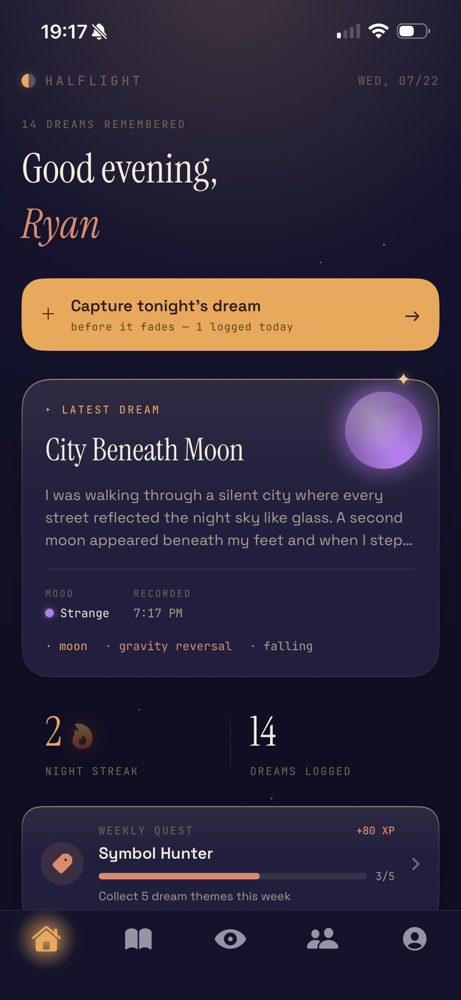
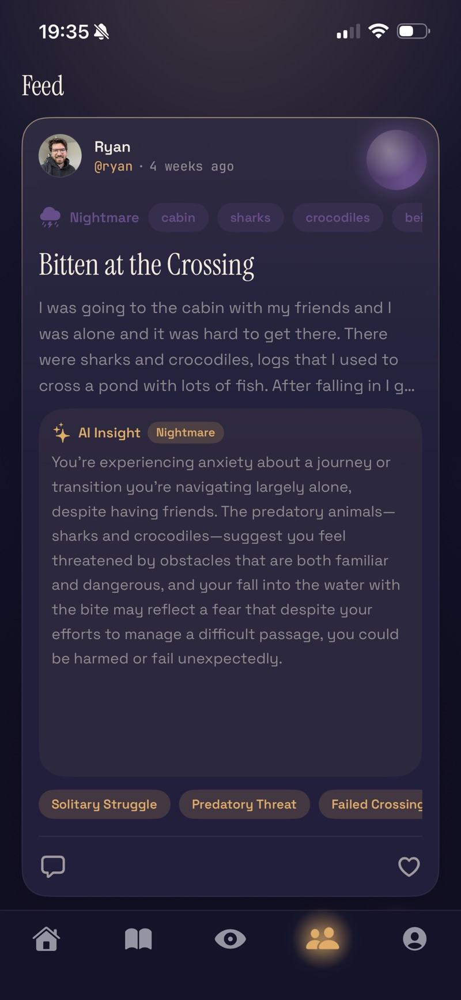
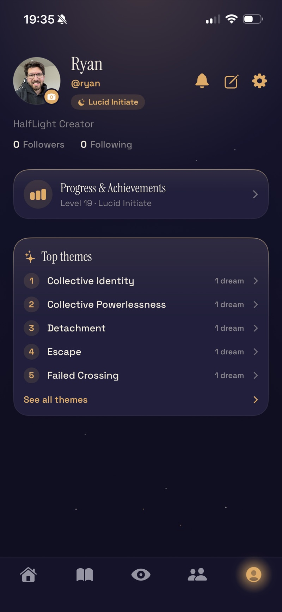

HalfLight
Remember your dreams. Learn to wake inside them. An AI-assisted dream journal and lucid-dreaming guide for iPhone.
What it is
HalfLight catches a dream before it slips away. You record it the moment you wake — typing or dictating — and the app interprets it, tags its recurring themes, tracks your journaling streak, and walks you through a structured curriculum for becoming aware inside a dream. Dreams you choose to share land in a social feed with likes, comments, and follows.
Under the hood it's a full product, not a demo: an offline-first iOS client with its own conflict-resolution layer, a Postgres backend where every table is locked down by row-level security, server-side AI that can't be run up by a leaked key, a subscription whose receipts are cryptographically verified on the server, and an automated moderation pipeline. The sections below are the parts I'd actually want to talk through in an interview.
- Dream journal — title, entry, mood, tags, lucidity, and on-device speech-to-text dictation
- AI assists — one-tap interpretation, theme extraction, and title generation, all executed server-side
- Lucid path — 45 lessons across 9 units covering recall, reality checks, and the MILD, WBTB, and WILD induction methods
- Progression — XP, named ranks, weekly quests, streaks, a tiered achievement system, and a per-year activity grid
- Social feed — publish, like, comment, follow, report; ranked by a custom scoring model rather than reverse-chronology
- Platform integration — home/lock-screen widgets, an App Intent for one-tap capture, local reminders, and push notifications
Architecture
The client owns your private library; the server owns everything shared and everything that costs money. That split drives every decision below — the app works fully offline on a plane, but no client is ever trusted with a spend decision or another user's data.
Engineering deep dives
Seven problems that were more interesting than they looked, and how I solved each.
Making sure a deleted dream stays deleted
The problem: the local database is the source of truth, but the same account can be signed in on two devices, edited offline, and reconciled later. Naïve sync resurrects deleted rows, duplicates entries, and — worst case — leaks one account's dreams into another's session.
The approach: a reconcile pass that merges remote and
local by last-write-wins on updated_at, plus a tombstone table.
Deleting a dream writes a tombstone with needsRemoteDelete; every
reconcile skips re-inserting a tombstoned id and retries the remote delete until it's
confirmed, then prunes the tombstone. Sign-in also compares the stored last-owner id
against the current user and wipes the local store if they differ, so an interrupted
sign-out can't bleed data across accounts. Signing in as a guest offers to claim and
upload the dreams recorded before the account existed.
A feed that rewards resonance, not reach
The problem: a reverse-chronological feed means the loudest poster wins and a great dream from a new user is invisible. I wanted the signal to be how strongly a dream lands with the people who see it.
The approach: a weighted score over four signals, with like-per-view conversion at its heart. Conversion is Bayesian-smoothed so one like on one view isn't 100%, then normalized across the batch so the weights stay meaningful as absolute rates drift.
viral = likes / (views + 8) · 1.00
interest = themeMatch × viral · 0.60
following = follows(author) ? 1 : 0 · 0.35
freshness = e^(−ageHrs/6) / (1 + views)· 0.15
Interest is learned locally: every theme on a dream you liked earns a point, and that affinity is multiplied by conversion, so relevance and quality have to co-occur to win. Freshness deliberately combines recency with low impressions, giving brand-new posts a window before the conversion signal has any data. The whole ranker is a pure function of its inputs — no I/O — which makes it trivially unit-testable.
Searching a dream journal by vibe
The problem: people don't remember the words they used at 4am. Substring search fails on "that one about being chased" when the entry says "someone was following me."
The approach: three layers, all offline. Tokenized order-independent matching with stop-words dropped; synonym expansion via Apple's on-device word embedding, weighted low so a fuzzy hit can never outrank a literal one; and true semantic ranking with sentence embeddings compared by cosine similarity.
The performance problem was re-embedding the whole journal on every keystroke. I built an index that caches one vector per dream keyed by a content hash, so a vector is recomputed only when that dream's text actually changes. Embedding runs on a detached background task — SwiftData models aren't safe to touch off the main actor, so the text is snapshotted to plain strings first — and bumps a version counter when it lands so ranked views recompute exactly once.
An AI feature nobody can run up the bill on
The problem: an API key shipped in a mobile binary is
a published key. And gating a paid feature in the UI protects nothing — the endpoint is
still one curl away.
The approach: the app never talks to Anthropic. It calls an Edge Function that runs a shared guard before a single token is spent:
1. verify the caller's Supabase JWT
2. has_active_subscription() → 402 if not Pro
3. consume_ai_credit() → 429 past 12/day
4. only then → Claude
Both gates are Postgres functions, and the credit is consumed atomically so parallel requests can't race past the daily cap. The entitlement row is writable only by the subscription functions, and only from a payload Apple actually signed — so a stolen publishable key plus a valid session still returns 402. Responses use Claude's structured-output JSON schema, which makes the category an enum the UI can rely on rather than a string I have to defensively parse.
Verifying Apple's receipts without Apple's library
The problem: the server has to know whether a
subscription is genuinely active — including renewals, refunds, and revocations that
happen while the app is closed. Apple's official server library depends on Node's
crypto.X509Certificate internals, which the Deno edge runtime doesn't
implement.
The approach: I implemented the JWS verification myself
with Web Crypto — pulling the x5c chain from the header, confirming it
terminates at a pinned Apple root, checking each certificate is in date and signed by
the one above it, verifying the signature with the leaf key, and finally confirming the
payload's bundle id is mine. Purchases carry the Supabase user id in StoreKit's
appAccountToken, so Apple's Server Notifications V2 webhook resolves back
to the right account with no guessing, and entitlements stay correct after a renewal or
a refund the app never saw.
Moderating content where "disturbing" is the point
The problem: App Review requires moderation for user-generated content, but this is a dream app — dark, frightening, and deeply strange are exactly what users are supposed to post. An off-the-shelf filter would delete the product.
The approach: three layers with deliberately different
strictness. The client filter is obfuscation-aware — it folds leetspeak
(0→o, $→s) and strips separators so f_u_c_k
still matches — and applies whole-word matching plus an allow-list to avoid the
Scunthorpe problem. Usernames block profanity and slurs, since a handle is a
permanent public label; published dreams block only hate speech, because swearing in
your own dream is fine. Postgres triggers re-enforce the same rules server-side as a
backstop against direct API writes. Reports go to a queue triaged daily by Claude via
pg_cron, which decides keep / hide / escalate — and, crucially,
defaults to escalate on any failure, so a bad model call puts a human in the
loop instead of silently hiding someone's dream.
Twelve languages that switch without a relaunch
The problem: iOS resolves localized strings through
Bundle.main using the language chosen at launch. Changing language
in-app normally means telling the user to restart — a bad first impression.
The approach: swap Bundle.main's class at
runtime for a subclass that redirects every localized lookup to the chosen language's
.lproj, then re-render the view tree. All 12 languages switch instantly.
Similar attention went elsewhere: the launch screen prebuilds every tab in the background so the first tap on each is instant, and its animation runs on Core Animation rather than SwiftUI — CA animates on the render server, so the mark stays fluid while the main thread is busy. Avatars are decoded once into a cache keyed by the image data itself, which removed scroll hitching from feed cards repeating the same author.
Data & security model
A dream journal is about as personal as user data gets. The rule I built to is that the database should be safe even if someone talks to it directly with a stolen client key.
- Row-level security on every table — dream policies match
auth.uid()against the row's owner for select, insert, update, and delete alike; signed-out users get no grant at all - Abuse limits in the database, not the client —
BEFORE INSERTtriggers cap publishing (3/day), comments (20/day), reports (5/day), and follows, raising a custom SQLSTATE the app translates into a friendly "come back tomorrow" instead of a generic error - Server-side integrity constraints — triggers block self-follows, enforce author integrity on feed posts, validate usernames, and hold a 30-day username-change cooldown
- Privacy by default — dreams are private unless explicitly published; private dreams are never moderated, never embedded remotely, and never leave the account
- Secret isolation — only the publishable anon key ships in the app; the Anthropic key, service-role key, and moderation cron secret exist solely as Edge Function secrets
- Real account deletion — a dedicated function permanently erases the account and its cascade, satisfying App Store Guideline 5.1.1(v)
How it's tested
The ranking and moderation logic is written as pure functions over immutable inputs specifically so it can be tested without a database, a network, or a simulator screen. The unit suite covers the three pieces where a silent regression would be most expensive: feed ordering, comment ordering, and the content filter — including the obfuscation cases (spaced-out and leetspeak evasions) and the false-positive cases ("class", "assassin") that a naïve substring filter gets wrong.
The subscription path has its own verification ladder: a local StoreKit configuration
for fast iteration, then Sandbox on a real device, then a direct curl
against the AI endpoint with a non-subscriber's token to confirm the server
returns 402 — because that's the check the UI can't prove.
By the numbers
A look at it
The visual language is its own design system — spacing, type, cards, and a night-sky backdrop defined in one place so every screen agrees. Moods carry their own palettes, and the home screen shifts with the time of day.



The product site has the full feature tour, the lucid path, and pricing.